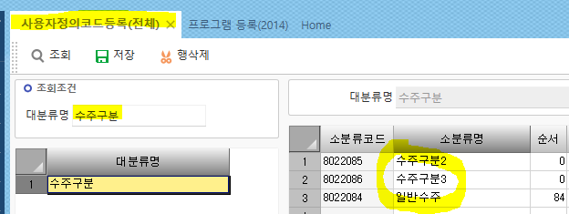
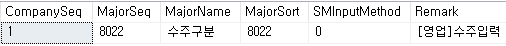
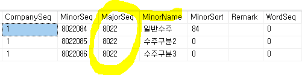
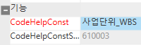

사용자정의코드
\<\<사용자정의, 시스템제공 코드.hwp>>
프로그램등록
1. 사용자정의코드분류등록(영림원AS) _TDAUMajor
2. 시스템제공코드분류값등록 _TDASMajor
* 사용자 정의코드 (_TDAUMinor)
쓰는 이유 : 사용자를 위해 만든 코드를 정리한 곳

ex.
cs - 사용자정의코드등록(전체)
대분류명 - 수주구분
_TDAUMajor - 대분류 코드 (ex.수주구분)
_TDAUMinor - 소분류 코드
==> orderseq처럼 majorseq로 연결되어있다


소분류는 알지만 대분류를 모른다
=> 시스템에 있다고 해도 그냥 사용자정의코드에 추가해도된다
S인지 U인지 모를 때
19998 – S
19999 - U

=> 19998, 19999 가 아닌건 ‘코드도움’ 방식이다
코드헬프 방식은 - 1. 사용자정의코드, 2.코드도움 2가지 방식이 있다
2방식은 사원처럼 계속 증가해서 일일히 추가해줄 수 없는 경우에 사용한다
or 복잡한 경우